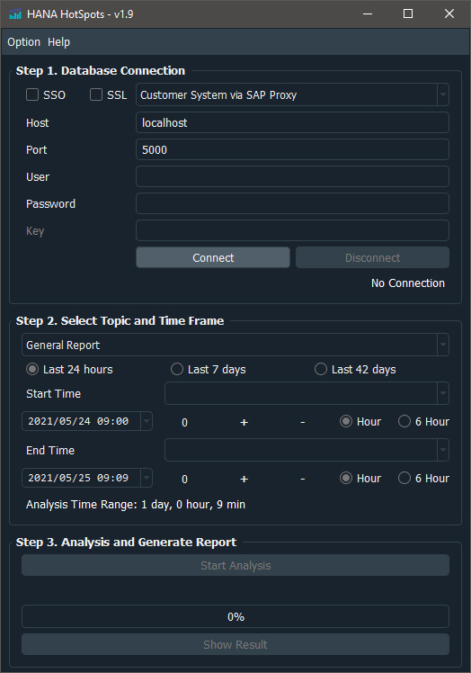
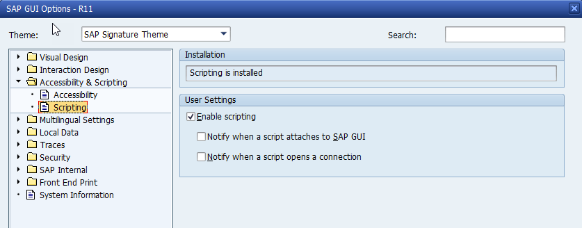
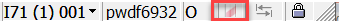

Manual
Overview¶
HANA HotSpots is an automation tool to capture HANA Database KPIs and present the result in an interactive report so that all stake holders (Support, System Administrator, etc) can understand the status of the HANA system intuitively.
- HANA HotSpots (i.e the GUI version) is released on Windows as of v1.0
hscmd (HANA HotSpots CMD) is the command line version of the same tool. To understand how to use it please run
hscmd -h
- hscmd on Windows is released as of v1.3
- hscmd on Mac is released as of v1.8
- hscmd on Linux is released as of v1.9
Outlook¶

How to use the tool?¶
The user interface (see above) is straightforward including 3 steps:
1. Connect to a HANA Database:¶
There are 4 ways to connect to a HANA database:
- If SAP HANA Database connection is open from the customer side, it is possible to connect to "localhost" after saptcpproxy is started. Please make sure that the port used is matching the saptcpproxy port, the default port is 5000.
As of V1.4, it is possible to connect to HANA database through SAPGUI. The prerequisite is as following:
- Transaction ST04 -> Diagnostics -> SQL Editor has been started on an SAP system running on HANA. HANA HotSpots will always try to connect to the last valid SAPGUI session.
-
SAPGUI scripting is enabled in the SAPGUI options as below, it is important to uncheck the two "Notify" sub-options to suppress the annoying warning message.
 -
ABAP parameter
sapgui/user_scriptingmust be set to TRUE on the SAP system. Please check this link for detailed instructions. If the highlighted icon in the SAPGUI status bar  is visible, then it means this parameter is set to TRUE. Otherwise please ask the customer for the permission to change it. This parameter can be changed online.
Warning
Please note that when using SAPGUI connection, the tool needs to access clipboard often, therefore please do not make "copy/paste" operation in parallel as otherwise the conflict may cause the tool to fail.
Define the Host/Port of any HANA system on the network for direct access.
If key is generated and stored via hdbuserstore, it is also possible to connect to HANA system via the key.
Furthermore, if SSO check box is flagged, the password can be omitted to connect to HANA system via Single-Sign-On. If SSL check box is flagged, the secure connection will be used to connect to HANA system. (e.g. should be used when connecting to HANA Cloud System)
2. Select Topic:¶
Once the database connection is successful, select a Topic to start the analysis. Topic is a collection of Checks that is focusing on particular area of HANA Database. Currently there are 4 Checks provided:
Focusing on most important HANA KPIs such as CPU, Memory, Thread Samples, Main Activities, etc. The analysis output would immediately show the HotSpots (i.e. When and what was the most significant bottleneck) of the HANA Database. At the beginning of the report, a summary section is provided to automatically detect the most critical issues (if any) identified on the HANA database.
Focusing on most expensive SQL statements based on several criteria: Total Elapsed Time, Number of Thread Samples, Average memory consumption, etc. The analysis output would show the overview and detailed information of all these top SQL statements including SQL text, heatmap, KPI history, etc.
Most important information of one SQL statement is shown: KPI history, all objects accessed, etc.
Run the scripts related to chapter "General Overview" from the TPO report template. The output will be stored on disk in plain text and can be easily copied to the final report.
3. Select Time frame:¶
The next step is to select the Timeframe of the analysis, by default, the analysis is focusing on the last 24 hours. The HANA server time will be used automatically, therefore do not be surprised if the appearing time is not the same as the local time. Some shortcuts are provided in the interface so that it is easier to select the "Start Time" and "End Time " of the analysis.
e.g. the combo box beside the Start Time label can be used to choose the baseline of the start time:
- Current time -> set the start time to the current HANA server time.
- End time -> set the start time to be the same as the End Time.
- Start of M_SERVICE_THREAD_SAMPLES -> set the start time to the beginning of M_SERVICE_THREAD_SAMPLES, when this is selected, the analysis will focus on the recent thread sample history that has a higher granularity.
- Most recent HANA startup time -> set the start time to the last HANA startup time.
The "+" and "-" button together with the 'Hour'/'6 Hour' radio button can be used to quickly change the start/end time. The "0" button will set the time to zero, i.e. the midnight of the date.
4. Start Analysis:¶
After the Topic and Timeframe are selected, click the "Start Analysis" button to launch the analysis. Depending on the workload of the system and the timeframe length selected, the analysis time may vary between less than one minute to more than 15 minutes. (Please have some patience : ) ) Finally "Show Result" button would open the report in your default browser. The report is a single HTML file located under the working directory with interactive embedded figures to show the HANA Database information. It is possible to zoom in/out and filter different KPIs for better understanding of the system status. Depending on the analysis choice, the report size ranges from a few MB to more than 20MB. Also note that it takes a while in the browser for the report to be fully rendered.
5. Log File:¶
A log file with name hsgui.log or hscmd.log (depending on the version) is generated under the same
directory where the tool is located. If error occurs, more information can be seen in the log file.
6. What kind of authorization is required to use the tool?¶
The tool basically needs to access HANA monitoring views (M_*) and statistics server views (_SYS_STATISTICS.HOST_*).
Therefore the HANA database user used in the tool need the privilege to access these views. i.e. the user
should have the standard catalog role MONITORING granted.
Options¶
The option menu will show options for different topics, at the moment mainly "General Report Option" is in place:
- Include Parameter Check: if checked, any topic including HANA parameter check will be carried out, otherwise it will be skipped to save time.
- Top Issue: if checked, the General Report will include a summary section at the beginning to show automatically detected top issues on the HANA database.
- Complete Summary: if checked, the summary section will show information of one area even if no issue has been detected.
- Include Static Info: if checked, static information is included in the general report, e.g. largest tables on the system. In the future more static information that does not change often along time line will be included.
- Include Link to Raw Data: if checked, link to the raw data will be included above each figure.
- Select Sections: it is possible to choose which section would be included in the generated General Report.
When the tool is closed, the option will be saved as configuration file hs.ini and
restored automatically next time it starts.
How to read the generated report?¶
General functions¶
- Use the menu to jump to each section and sub-section (e.g. [CPU] -> ‘Thread Workload’)
- All the figures are interactive:
- Mouse drag on the center of the figure can zoom in; The ‘house’ icon can reset the scale.
- Mouse drag at the corner of the figure can zoom in along different axis.
- Mouse drag on the axis can pan the figure.
- Mouse hover on the traces will show additional important information.
- Click on legend graph can toggle that trace; Double click on legend graph can focus on that trace.
- Click on legend word can be used to select the content (e.g. copy SQL HASH).
- Click on 'camera' icon can download the figure as png file.
There are 3 types of reports that can be generated, they are explained in detail below:
General Report¶
General report consists of following sections and sub-sections:
Summary¶
- Top Issues: most critical issues identified are shown in a table. The columns of the summary tables have the following
meaning:
- Area: area of the issue
- Priority: Very High / High / Medium / Info
- Description: describe the issue, if option "Complete Summary" is checked, then 'No issues Detected' will be shown here
- Host: on which host the issue occurs
- Time: The critical timestamp when the issue occurs
- Section: Link to the section
Parameter¶
- Check Result: if option "Include Parameter Check" is checked, the HANA parameter check result is shown
- Change History: parameter change history is shown (available as of HANA 2.00.030)
CPU¶
- General Configuration: hardware model, CPU type, Number of CPU, etc are shown Detailed NUMA info is shown as of HANA 2.00.010
- CPU vs. Threads: CPU load aggregated by MAX and AVG are shown. The time interval depends on the time range selected:
- Time range >= 6 hours: interval = 10 mins
- Time range < 6 hour: interval = 2 mins
- Thread Workload: Workload related parameters are shown. If workload class are defined, they will be shown. In the graph, 'session number' stands for the number of sessions connected to HANA, i.e. number of active work processes on SAP Application Servers
- SQL with Most Running Thread: SQL hash and text with thread state = 'Running' are shown. The data filter based on
thread sample history depends on the time range selected, the below rule apply to all figures involving
thread sample history:
- Time range <= 6 hours: interval = 2 mins; Others percent = 0: i.e. all thread sample will be shown
- 6 hours < Time range <= 2 days: interval = 10 mins; Others percent = 0.5: i.e. all threads that contribute to less than 0.5 percent in each time interval will be aggregated together into category '-- Others --' as shown in the figure
- Time range > 2 days: interval = 1 hour; Other percent = 1, similarly, individual portion less than 1 percent will be aggregated into category '-- Others -- '
- SQL with Most Thread Sample: SQL hash and text with all threads, sometimes even if the thread state is not 'Running', there is still a chance that this thread is busy with CPU
- Application Source with Most Running Thread: Click on the center of the 'Sunburst' figure would focus only on that application source and show the distribution of SQL related to this source
- NUMA Load: shows the distribution of thread samples related to each NUMA load
Memory¶
- General Configuration: memory configuration
- Memory and Unloads: memory consumption from HOST_RESOURCE_UTILIZATION_STATISTICS and HOST_LOAD_HISTORY_SERVICE
- Top Consumer by Component: memory consumption from HOST_SERVICE_COMPONENT_MEMORY
- Top Consumer by Area / Subarea / Objects: memory consumption from script HANA_Memory_TopConsumers, aggregated by different granularity
- Top Consumer of Heap Area: top consumer of Heap Areas, information from SAP Note 1999997 is shown below the figure to show detailed information of the top heap areas
- Service Memory: memory consumption from HOST_SERVICE_MEMORY
- Expensive SQL with Top Used Memory: SQL with most memory consumption from expensive SQL trace are shown.
- SQL with Top Avg Memory Allocation: SQL with most allocated memory from SQL plan cache is shown, note that these figures are the allocated memory, not the peak memory foot print. Use it as reference only and it is not reliable to decide SQL with most memory consumption in this figure
Activity¶
- Important Activities: activities that last longer than 1 minute are shown: Indexserver down / Backup / Merge / Consistency Check / Savepoint
- Tables with High Merge Time: all table/partitions with merge running time longer than 1 minute are shown
- Savepoint Duration and Throughput: Savepoints that last longer than 1 minute are shown
- ConsistentChangeLock Holder - SQL Hash: if block time of any savepoint is longer than 10 sec, than the SQL that is holding the CCL is shown
- ConsistentChangeLock Holder - Thread State and Lock Name: similarly, if the lock holder of CCL is waiting for another lock, such lock information is shown
SQL¶
- Sessions and SQL Executed per Second
- SQL Workload
- SQL Cache Overview: if the SQL cache is undersized, the figure will show the issue
- SQL Avg Request Time
- SQL with Top Elapsed Time: SQL with most total elapsed time is shown, the mouse hover information will also show the elapsed time per execution, elapsed time per row, etc.
- Expensive SQL with Top Elapsed Time: since the retention time of Expensive SQL trace depends on the system workload, it is normal that majority part of the history information is empty
Thread Sample¶
- Thread State and Lock Name: information from SAP Note 1999998 is shown below the figure to show detailed information
- Thread Type and Thread Method: information from SAP Note 2114710 is shown below the figure to show detailed information
- SQL and Lock Name: top SQL and its waiting lock type is shown. If the lock type is '?', it means the SQL is likely to be busy on CPU
- SQL and Thread Method: top SQL and its thread method is shown.
- SQL Hierarchy: the figure shows the SQL Hierarchy where SQL HASH is different from the Root HASH. Such graph will show e.g. which individual SQL triggered by a procedure call is dominant.
- DB User
- Application User
- Client Host
Space¶
- Volume, Backup and Memory Size
- Log Volume and Merge: the figure shows the hourly generated log size in comparison with the tables with most merged rows, these top tables are in general responsible for most of the log volumes
- Table with Largest Disk Size: the history information is recorded every 6 hours, so it is normal if the result is empty when the analysis time range is less than 6 hours. Both column table and row table are considered
- Column Table with Largest Memory Size: the result is aggregated by table
- Column Table with Most Rows: the result is aggregated by partition
- Row Table with Largest Memory Size
- Row Table with Largest Fragmented Size
- Row Table with Most Rows
Disk¶
- General Configuration: host, usage type, path, file system type, total size and used size are shown
- Disk Size: the history usage of disk size is sampled once per day
- DATA Volume Read
- DATA Volume Write
- LOG Volume Write
- Commit Frequency and Latency
Backup¶
- Data Backup History: the backup status can be seen with mouse hover
- Log Backup History
Garbage Collection¶
- Versions and Commit Range
- Garbage Collection Blocker History: the information shown is only for reference and might not be reliable
Application Lock¶
- Transactions and Blocked Transactions
- Waiting SQL HASH: top SQL waiting for application lock
- Waiting Table: top tables on which SQL is waiting for application lock
- Lock Holder Application Source: top application source holding the lock
- Waiting SQL / Waiting Table / Lock Holder Status: shows the lock holder status that blocks the waiting SQL/Table, Status = 'ACTIVE' means the lock holder is busy with another SQL; Status = 'IDLE' means the lock holder is busy on the SAP side
- Waiting SQL / Waiting Table / Lock Holder SQL: if the lock holder status is 'ACTIVE', this figure shows these SQLs that is holding the lock
- Waiting SQL / Waiting Table / Lock Holder Source: shows the lock holder application source that holds the lock
System Replication¶
- General Configuration: shows the HANA System Replication configuration
- Log Shipping Throughput and Latency
- Log Shipping Delay and Backlog
- Log Replay Delay and Backlog
- Log Shipping Buffer
Single SQL Report¶
Single SQL report is designed to show detailed information of one particular SQL statement based on its statement hash. The report consists of following sections/sub-sections:
General Information¶
- SQL HASH and Text
- Bind Value: top 10 bind values in the expensive statement trace will be shown
- Execution Plan: execution plan with existing plan_id is shown, different plan levels are shown with different colors
KPI¶
- Summary: most important KPI of the SQL statement is shown
- SQL Cache History: average run time of different plan_id are shown with different colors
- SQL Cache History Heatmap: the figure shows the KPI distribution in terms of day of the week and hour of the day based on 4 different criteria: total elapsed time/total number of execution/ average time per execution/average row per execution
- Thread Workload: the figure shows the parallel degree history of the SQL statement
- Merge: table merge history is shown together with SQL average run time
- TSH (Thread State/Lock): thread sample history aggregated by thread state and lock name
- TSH (Thread Type/Method/Detail): thread sample history aggregated by thread type, thread method and thread detail
- TSH (DB User/App Name/Client IP): thread sample history aggregated by database user, application name and client IP
- TSH (App User/App Source): thread sample history aggregated by application user and application source
- Expensive SQL: KPI from expensive statement trace is shown
- SQL Hierarchy (as Parent): all child SQL with root statement hash equals the current SQL is shown, this figure helps to identify the dominant contributor if the SQL in question has child
- Application Lock (as Holder): the figure shows the lock waiter SQL / lock waiter table / lock waiter application source distribution that is blocked by the current SQL statement
Objects¶
- Accessed Objects: the table shows all objects accessed by the SQL statement, click on the object name will jump to the detailed information of that object
- Object Hierarchy: if the SQL statement is accessing e.g. a procedure, the hierarchy of the accessed objects including sub procedures, functions, views, etc is shown. Different hierarchy levels are shown with different colors. Click on the object name will jump to the detailed information of the object
- View Definitions: all the normal view (i.e. excluding Calculation View, OLAP View, etc) definition is shown
- Translation Table: if a join is performed, the translation table is shown
- Table Overview: first a table list with all involved tables are shown.
- click on the 'table name' will jump to the 'Table Detail' sub-section of the table
- click on the '#column' will jump to the 'Column Info' sub-section of the table
- click on the '#partition' or 'partition type' will jump to the 'Partition Definition' sub-section of the table
- click on the '#records' will jump to sub-section 'Table Size History (Row Number)'
- click on the '#index' will jump to the 'Index List' sub-section of the table
- click on the '#lob' will jump to the 'LOB Info' sub-section of the table
- click on the '#trigger' will jump to the 'Trigger Info' sub-section of the table
- click on the 'Total Memory Size(GB)' will jump to sub-section 'Table Size History (Memory)'
- click on the 'Disk Size(GB)' will jump to sub-section 'Table Size History (Disk)'
- click on the 'Last Merge Time' will jump to sub-section KPI -> 'Merge'
- click on '
- Table Detail' will jump to the table overview - click on '
- Index List' or any other detailed info sub-section title will jump back to the 'Table Detail' sub-section
- Table Size History (Memory): table memory size history is shown together with the SQL average run time
- Table Size History (Row Number): table row size history is shown together with the SQL average run time
- Table Size History (Disk): table disk size history is shown together with the SQL average run time
Optimization Helper¶
- SQL Text with Bind Value: SQL texts with bind variable replaced by bind value is shown.
Example¶
Please click this link: Example Report to see an example General Report.
Feedback?¶
Author: Mingqian Zhong (Please contact me via mingqian.zhong@sap.com) / Sponsor: Ramu Vidadala